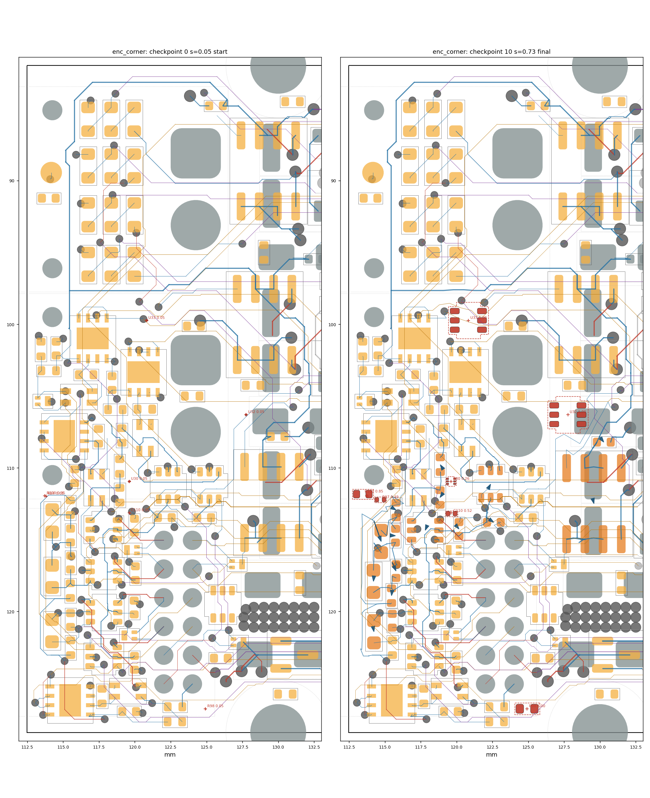
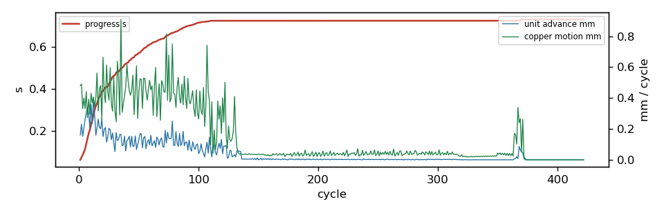

settle run: enc_corner
422 cycles in 207.1 s, progress s = 0.7317; 3/7 ghosts born; 16 parts moved; 10/33 reroutes verified in 2 rounds. Gate: 11/11 checkpoints pass (baseline 2 violations); length caps hit: 0; check_sync: True.
Region [112.4, 81.9, 132.5, 128.5]; rules clearance 0.1 mm, hole 0.254, edge 0.3, guard 0.015.
79 movable parts, 1133 dynamic segments, 1266 nodes, 7 ghosts.
Orange pads = movable parts (dark orange = moved); grey = fixed; red = ghosts at their current scale; blue arrows = part displacement.
Copper by layer: F red, B blue, In1 green, In2 purple, In3 brown, In4 teal; static copper grey.


Gate per checkpoint
| step | s | tag | unconnected | new_violations | static_missing | fixed_moved | ok | new_desc |
|---|
| 0 | 0.05 | start | 103 | 0 | 0 | [] | True | [] |
| 1 | 0.115 | | 103 | 0 | 0 | [] | True | [] |
| 2 | 0.204 | | 103 | 0 | 0 | [] | True | [] |
| 3 | 0.319 | | 103 | 0 | 0 | [] | True | [] |
| 4 | 0.408 | | 103 | 0 | 0 | [] | True | [] |
| 5 | 0.501 | | 103 | 0 | 0 | [] | True | [] |
| 6 | 0.605 | | 103 | 0 | 0 | [] | True | [] |
| 7 | 0.701 | | 103 | 0 | 0 | [] | True | [] |
| 8 | 0.725 | reroute | 103 | 0 | 0 | [] | True | [] |
| 9 | 0.732 | reroute | 103 | 0 | 0 | [] | True | [] |
| 10 | 0.732 | final | 103 | 0 | 0 | [] | True | [] |
Ghosts
| ref | site | scale | drift_x | drift_y | born |
|---|
| U30 | (119.62, 110.94) | 0.2647 | 0.0 | 0.0 | no |
| U32 | (127.76, 106.30) | 1.0 | 0.0 | 0.0 | yes |
| U33 | (120.82, 99.73) | 1.0 | 0.0 | 0.0 | yes |
| R97 | (113.81, 111.96) | 0.4884 | 0.885 | 0.254 | no |
| R98 | (124.92, 126.77) | 1.0 | 0.0 | 0.0 | yes |
| R100 | (113.72, 111.94) | 0.8524 | -0.262 | -0.116 | no |
| C110 | (119.62, 113.14) | 0.5165 | 0.033 | 0.046 | no |
Parts moved
| ref | dx | dy | mm | group |
|---|
| C69 | 0.509 | 1.437 | 1.524 | |
| C74 | 0.263 | 0.586 | 0.642 | |
| C71 | 0.509 | 0.332 | 0.608 | |
| C16 | 0.309 | 0.39 | 0.498 | |
| R96 | -0.041 | 0.354 | 0.356 | |
| C75 | -0.033 | 0.347 | 0.349 | |
| R94 | 0.281 | 0.167 | 0.327 | |
| C64 | 0.195 | 0.234 | 0.305 | |
| C67 | 0.222 | 0.012 | 0.222 | |
| R88 | -0.112 | 0.16 | 0.195 | |
| R89 | -0.082 | -0.126 | 0.15 | |
| U25 | 0.05 | -0.093 | 0.106 | |
| U5 | 0.023 | 0.086 | 0.089 | |
| C70 | 0.014 | 0.075 | 0.076 | |
| U22 | -0.021 | 0.052 | 0.056 | |
| C68 | 0.001 | 0.05 | 0.05 | |
Net length growth (copper inside the region)
| net | region_mm | grown_mm | growth_pct | allow_mm | cap_mm | at_cap |
|---|
| /EXT_ANALOG_SW | 20.73 | 1.843 | 8.9 | 4.146 | 10.364 | |
| /ENC_D_DATA | 23.84 | 0.886 | 3.7 | 4.767 | 11.918 | |
| /ENC_A_P_SW | 1.77 | 0.052 | 2.9 | 0.5 | 2.0 | |
| GND | 99.96 | 2.604 | 2.6 | None | None | |
| /ENC_A_N_SW | 8.72 | 0.167 | 1.9 | 0.872 | 2.0 | |
| A_SENSE | 13.55 | 0.255 | 1.9 | 1.355 | 2.711 | |
| +3V3 | 156.25 | 2.493 | 1.6 | 46.876 | 156.252 | |
| Vdrive | 52.9 | 0.771 | 1.5 | 15.871 | 52.903 | |
| /HALL1 | 39.44 | 0.542 | 1.4 | 7.888 | 19.721 | |
| /HALL2 | 23.39 | 0.291 | 1.2 | 4.677 | 11.693 | |
| /H3_SW | 38.13 | 0.458 | 1.2 | 7.626 | 19.065 | |
| /ENC_A_SW | 41.88 | 0.466 | 1.1 | 8.375 | 20.937 | |
| /C_N | 5.13 | 0.049 | 0.9 | 1.026 | 2.566 | |
| /ENC_D_SW | 34.22 | 0.231 | 0.7 | 6.843 | 17.108 | |
| /H1_SW | 28.48 | 0.162 | 0.6 | 5.697 | 14.243 | |
| /ENC_C_N | 18.39 | 0.036 | 0.2 | 1.839 | 2.758 | |
| /A_P | 34.37 | 0.04 | 0.1 | 6.875 | 17.187 | |
| /EXT_ANALOG2 | 46.08 | 0.041 | 0.1 | 9.215 | 23.038 | |
| /HALL3 | 31.69 | -0.008 | -0.0 | 6.338 | 15.844 | |
| /ENC_A_P | 6.02 | -0.02 | -0.3 | 0.602 | 2.0 | |
| /ENC_C_N_SW | 7.89 | -0.038 | -0.5 | 0.789 | 2.0 | |
| /ENC_C_P_SW | 8.38 | -0.06 | -0.7 | 0.838 | 2.0 | |
| B_SENSE | 43.3 | -0.387 | -0.9 | 4.33 | 8.659 | |
Stalled units and their blockers
| unit | hard_walled | blocker | net | ref | margin | floor | pos |
|---|
| GHOST:C110 | | courtyard | | U22 | -0.05 | 0.003 | |
| GHOST:U30 | | courtyard | | R88 | -0.05 | 0.003 | |
| R88 | | dyn_via | /ENC_A_SW | | 0.0053 | 0.015 | [118.291, 113.165] |
| R88 | | dyn_via | /ENC_A_SW | | -0.0271 | 0.015 | [118.291, 113.165] |
| R88 | | dyn_via | /ENC_A_SW | | -0.0342 | 0.015 | [118.291, 113.165] |
| R88 | | dyn_via | /ENC_A_SW | | -0.0342 | 0.015 | [118.291, 113.165] |
| U22 | | dyn_via | GND | | 0.0014 | 0.015 | [117.271, 114.262] |
| U22 | | dyn_via | GND | | 0.0014 | 0.015 | [117.271, 114.262] |
| U22 | | dyn_via | GND | | 0.0078 | 0.015 | [117.271, 114.262] |
| U22 | | dyn_via | GND | | -0.0276 | 0.015 | [117.271, 114.262] |
| C64 | | dyn_seg | Vdrive | | 0.005 | 0.015 | [119.858, 114.443] |
| C64 | | dyn_seg | Vdrive | | 0.005 | 0.015 | [119.858, 114.443] |
| C64 | | dyn_seg | Vdrive | | 0.0127 | 0.015 | [119.858, 114.443] |
| C64 | | dyn_seg | Vdrive | | 0.005 | 0.015 | [119.721, 114.385] |
| GHOST:R100 | yes | board_edge | | | -0.026 | 0.015 | |
| GHOST:R100 | yes | ghost_pad | +3V3 | GHOST:R97.1 | -0.0024 | 0.015 | [114.441, 112.219] |
| GHOST:R100 | yes | ghost_pad | +3V3 | GHOST:R97.1 | -0.0175 | 0.015 | [114.441, 112.219] |
| GHOST:R100 | yes | ghost_pad | +3V3 | GHOST:R97.1 | -0.0175 | 0.015 | [114.441, 112.219] |
| GHOST:R97 | | ghost_pad | /ENC_D_P | GHOST:R100.2 | -0.0036 | 0.015 | [113.894, 111.828] |
| GHOST:R97 | | ghost_pad | /ENC_D_P | GHOST:R100.2 | -0.0175 | 0.015 | [113.894, 111.828] |
| GHOST:R97 | | ghost_pad | /ENC_D_P | GHOST:R100.2 | -0.0175 | 0.015 | [113.894, 111.828] |
| GHOST:R97 | | ghost_pad | /ENC_D_P | GHOST:R100.2 | -0.0021 | 0.015 | [113.894, 111.828] |
| U25 | | dyn_via | GND | | 0.0145 | 0.015 | [122.281, 109.755] |
| C75 | | dyn_seg | +3V3 | | 0.0054 | 0.0054 | [114.175, 119.624] |
| grp:C69 | | dyn_seg | GND | | 0.0037 | 0.015 | [115.445, 115.246] |
| grp:C69 | | dyn_seg | GND | | 0.0037 | 0.015 | [115.445, 115.246] |
| grp:C69 | | courtyard | | C67 | 0.002 | 0.003 | |
| C70 | | dyn_seg | +3V3 | | 0.0098 | 0.015 | [113.626, 122.864] |
| C70 | | dyn_seg | +3V3 | | -0.0052 | 0.0003 | [113.626, 122.864] |
| C70 | | dyn_seg | +3V3 | | -0.0052 | 0.0003 | [113.626, 122.864] |
| C70 | | dyn_seg | +3V3 | | 0.0149 | 0.015 | [113.626, 122.864] |
| grp:C67 | | dyn_seg | /ENC_A_N_SW | | 0.0131 | 0.015 | [116.303, 113.75] |
| grp:C67 | | dyn_seg | /ENC_A_N_SW | | 0.0131 | 0.015 | [116.303, 113.75] |
| grp:C67 | | dyn_via | /HALL1 | | 0.0038 | 0.015 | [115.923, 113.16] |
| grp:C67 | | dyn_via | /HALL1 | | 0.002 | 0.015 | [115.923, 113.16] |
| R94 | | dyn_seg | /ENC_A_N_SW | | -0.0184 | 0.015 | [116.555, 113.253] |
| R94 | | dyn_seg | /ENC_A_N_SW | | -0.0331 | 0.015 | [116.303, 113.75] |
| R94 | | dyn_seg | /ENC_A_N_SW | | -0.0331 | 0.015 | [116.303, 113.75] |
| R94 | | dyn_seg | /ENC_A_N_SW | | -0.0278 | 0.015 | [116.303, 113.75] |
Absorbed pressure (where demand died)
| mover | blocker | what | hits |
|---|
| GHOST:R100 | board_edge | | 749 |
| node1148 | pad | J12.11 [/ENC_A_P] | 379 |
| node1166 | pad | J12.11 [/ENC_A_P] | 169 |
Config
{
"name": "enc_corner",
"board": "/home/sequoia/pcb/rp2350-motor-controller-lean-jiggle/hardware/rp2350_driver.kicad_pcb",
"region": [
112.4,
81.9,
132.5,
128.5
],
"rules": {
"guard": 0.015
},
"locked": {
"sides": [
"F"
],
"refs": [
"J1",
"J2",
"J12",
"H3",
"H4"
],
"nets": [
"^/USB_D",
"^/CAN0_"
],
"rects": []
},
"mobility": {
"default": 1.0
},
"groups": {},
"drive": {
"inflate": [
{
"ref": "U30",
"at": "search",
"radius": 8
},
{
"ref": "U32",
"at": "search",
"radius": 8
},
{
"ref": "U33",
"at": "search",
"radius": 8
},
{
"ref": "R97",
"at": "search",
"radius": 8
},
{
"ref": "R98",
"at": "search",
"radius": 8
},
{
"ref": "R100",
"at": "search",
"radius": 8
},
{
"ref": "C110",
"at": {
"near": "U30",
"offset": [
0.0,
0.0
],
"search": 4.0
}
}
]
},
"step": 0.05,
"snapshots": 10,
"cycles": 600,
"data": "/home/sequoia/pcb/rp2350-motor-controller-lean-jiggle/hardware/tools/settle/configs/data/enc_corner"
}
Elastic table
{
"default": {
"k": 0.5,
"allow": 0.2,
"cap": 0.5,
"allow_mm": 0.5,
"cap_mm": 2.0
},
"classes": {
"VMOT": {
"k": 0.2,
"allow": 0.3,
"cap": 1.0,
"allow_mm": 1.0,
"cap_mm": 6.0
},
"power": {
"k": 0.2,
"allow": 0.3,
"cap": 1.0,
"allow_mm": 1.0,
"cap_mm": 6.0
},
"usb_5A": {
"k": 0.2,
"allow": 0.3,
"cap": 1.0,
"allow_mm": 1.0,
"cap_mm": 6.0
},
"low_power": {
"k": 0.2,
"allow": 0.3,
"cap": 1.0,
"allow_mm": 1.0,
"cap_mm": 6.0
}
},
"nets": {
"^GND": {
"k": 0.0,
"allow": 1000000000.0,
"cap": 1000000000.0
},
"^(VMOT|Vdrive|VBUS|\\+3V3|\\+1V1|\\+5V_ISO|/V_ENC|/V_SW)$": {
"k": 0.2,
"allow": 0.3,
"cap": 1.0,
"allow_mm": 1.0,
"cap_mm": 6.0
},
"^Net-\\(U(1|6|7|12)-(HO|LO|VB)\\)$": {
"k": 4.0,
"allow": 0.0,
"cap": 0.05,
"allow_mm": 0.0,
"cap_mm": 0.3
},
"^/2[ABCD]G[HL]$": {
"k": 4.0,
"allow": 0.0,
"cap": 0.05,
"allow_mm": 0.0,
"cap_mm": 0.3
},
"^Net-\\(Q[1-4]-[BE]\\)$": {
"k": 4.0,
"allow": 0.0,
"cap": 0.05,
"allow_mm": 0.0,
"cap_mm": 0.3
},
"^Net-\\((R(24|59|62|67|70)|D\\d+)-": {
"k": 2.0,
"allow": 0.05,
"cap": 0.15,
"allow_mm": 0.2,
"cap_mm": 0.8
},
"^/USB_D": {
"k": 4.0,
"allow": 0.0,
"cap": 0.02,
"allow_mm": 0.0,
"cap_mm": 0.1
},
"^/CAN0_": {
"k": 4.0,
"allow": 0.0,
"cap": 0.02,
"allow_mm": 0.0,
"cap_mm": 0.1
},
"^/ENC_[A-D]_(P|N)(_SW)?$": {
"k": 1.0,
"allow": 0.1,
"cap": 0.15,
"allow_mm": 0.5,
"cap_mm": 2.0
},
"^/ENC_[A-D]_TRX_": {
"k": 1.0,
"allow": 0.1,
"cap": 0.2,
"allow_mm": 0.5,
"cap_mm": 2.0
},
"^[ABCD]_PWM_": {
"k": 1.0,
"allow": 0.1,
"cap": 0.25,
"allow_mm": 0.5,
"cap_mm": 3.0
},
"SENSE": {
"k": 1.0,
"allow": 0.1,
"cap": 0.2,
"allow_mm": 0.5,
"cap_mm": 2.0
}
}
}
Log tail
dv=0.158mm copper=0.453mm [24s]
cycle 65: s=0.628 ghosts=1/7 blocked=4 adv=0.147mm copper=0.279mm [26s]
cycle 70: s=0.640 ghosts=1/7 blocked=4 adv=0.085mm copper=0.487mm [29s]
cycle 75: s=0.657 ghosts=1/7 blocked=5 adv=0.140mm copper=0.678mm [32s]
cycle 80: s=0.671 ghosts=1/7 blocked=5 adv=0.093mm copper=0.425mm [35s]
cycle 85: s=0.686 ghosts=1/7 blocked=6 adv=0.092mm copper=0.366mm [38s]
cycle 90: s=0.699 ghosts=1/7 blocked=4 adv=0.115mm copper=0.332mm [42s]
checkpoint 8: s=0.701
cycle 95: s=0.706 ghosts=1/7 blocked=6 adv=0.117mm copper=0.447mm [45s]
cycle 100: s=0.716 ghosts=1/7 blocked=4 adv=0.040mm copper=0.264mm [48s]
cycle 105: s=0.720 ghosts=2/7 blocked=6 adv=0.018mm copper=0.217mm [51s]
cycle 110: s=0.725 ghosts=2/7 blocked=4 adv=0.069mm copper=0.096mm [54s]
cycle 115: s=0.725 ghosts=3/7 blocked=4 adv=0.031mm copper=0.114mm [57s]
cycle 120: s=0.725 ghosts=3/7 blocked=6 adv=0.038mm copper=0.401mm [60s]
cycle 125: s=0.725 ghosts=3/7 blocked=6 adv=0.015mm copper=0.220mm [63s]
cycle 130: s=0.725 ghosts=3/7 blocked=6 adv=0.034mm copper=0.411mm [66s]
cycle 135: s=0.725 ghosts=3/7 blocked=5 adv=0.055mm copper=0.038mm [68s]
cycle 140: s=0.725 ghosts=3/7 blocked=5 adv=0.005mm copper=0.034mm [71s]
cycle 145: s=0.725 ghosts=3/7 blocked=5 adv=0.007mm copper=0.035mm [73s]
cycle 150: s=0.725 ghosts=3/7 blocked=5 adv=0.000mm copper=0.038mm [75s]
cycle 155: s=0.725 ghosts=3/7 blocked=5 adv=0.003mm copper=0.031mm [78s]
cycle 160: s=0.725 ghosts=3/7 blocked=5 adv=0.007mm copper=0.030mm [80s]
cycle 165: s=0.725 ghosts=3/7 blocked=5 adv=0.005mm copper=0.040mm [83s]
cycle 170: s=0.725 ghosts=3/7 blocked=5 adv=0.006mm copper=0.032mm [85s]
cycle 175: s=0.725 ghosts=3/7 blocked=6 adv=0.001mm copper=0.032mm [87s]
cycle 180: s=0.725 ghosts=3/7 blocked=5 adv=0.001mm copper=0.048mm [90s]
cycle 185: s=0.725 ghosts=3/7 blocked=6 adv=0.001mm copper=0.039mm [92s]
cycle 190: s=0.725 ghosts=3/7 blocked=6 adv=0.003mm copper=0.028mm [95s]
cycle 195: s=0.725 ghosts=3/7 blocked=5 adv=0.003mm copper=0.053mm [97s]
cycle 200: s=0.725 ghosts=3/7 blocked=6 adv=0.001mm copper=0.040mm [99s]
cycle 205: s=0.725 ghosts=3/7 blocked=5 adv=0.004mm copper=0.024mm [102s]
cycle 210: s=0.725 ghosts=3/7 blocked=5 adv=0.000mm copper=0.057mm [104s]
cycle 215: s=0.725 ghosts=3/7 blocked=5 adv=0.002mm copper=0.037mm [107s]
cycle 220: s=0.725 ghosts=3/7 blocked=6 adv=0.003mm copper=0.031mm [109s]
cycle 225: s=0.725 ghosts=3/7 blocked=5 adv=0.004mm copper=0.022mm [112s]
cycle 230: s=0.725 ghosts=3/7 blocked=5 adv=0.004mm copper=0.046mm [114s]
cycle 235: s=0.725 ghosts=3/7 blocked=5 adv=0.002mm copper=0.033mm [116s]
cycle 240: s=0.725 ghosts=3/7 blocked=5 adv=0.002mm copper=0.054mm [119s]
cycle 245: s=0.725 ghosts=3/7 blocked=5 adv=0.003mm copper=0.034mm [121s]
cycle 250: s=0.725 ghosts=3/7 blocked=5 adv=0.001mm copper=0.057mm [124s]
cycle 255: s=0.725 ghosts=3/7 blocked=5 adv=0.002mm copper=0.035mm [126s]
cycle 260: s=0.725 ghosts=3/7 blocked=6 adv=0.001mm copper=0.055mm [129s]
cycle 265: s=0.725 ghosts=3/7 blocked=5 adv=0.002mm copper=0.035mm [131s]
cycle 270: s=0.725 ghosts=3/7 blocked=5 adv=0.002mm copper=0.027mm [133s]
cycle 275: s=0.725 ghosts=3/7 blocked=6 adv=0.000mm copper=0.040mm [136s]
cycle 280: s=0.725 ghosts=3/7 blocked=5 adv=0.000mm copper=0.040mm [138s]
cycle 285: s=0.725 ghosts=3/7 blocked=5 adv=0.000mm copper=0.043mm [141s]
cycle 290: s=0.725 ghosts=3/7 blocked=5 adv=0.000mm copper=0.052mm [143s]
cycle 295: s=0.725 ghosts=3/7 blocked=6 adv=0.003mm copper=0.054mm [146s]
cycle 300: s=0.725 ghosts=3/7 blocked=5 adv=0.003mm copper=0.034mm [148s]
cycle 305: s=0.725 ghosts=3/7 blocked=5 adv=0.003mm copper=0.032mm [150s]
cycle 310: s=0.725 ghosts=3/7 blocked=5 adv=0.003mm copper=0.042mm [153s]
cycle 315: s=0.725 ghosts=3/7 blocked=5 adv=0.002mm copper=0.037mm [155s]
cycle 320: s=0.725 ghosts=3/7 blocked=6 adv=0.001mm copper=0.032mm [158s]
cycle 325: s=0.725 ghosts=3/7 blocked=5 adv=0.000mm copper=0.018mm [160s]
cycle 330: s=0.725 ghosts=3/7 blocked=5 adv=0.000mm copper=0.022mm [163s]
cycle 335: s=0.725 ghosts=3/7 blocked=5 adv=0.000mm copper=0.020mm [165s]
cycle 340: s=0.725 ghosts=3/7 blocked=5 adv=0.000mm copper=0.025mm [167s]
cycle 345: s=0.725 ghosts=3/7 blocked=5 adv=0.000mm copper=0.022mm [170s]
cycle 350: s=0.725 ghosts=3/7 blocked=5 adv=0.000mm copper=0.044mm [172s]
cycle 355: s=0.725 ghosts=3/7 blocked=5 adv=0.000mm copper=0.031mm [175s]
cycle 360: s=0.725 ghosts=3/7 blocked=5 adv=0.000mm copper=0.042mm [177s]
stall at cycle 363 (s=0.725): reroute round 1
reroute round 1: 9/16 chains rerouted (16 candidates)
checkpoint 9: s=0.725 reroute
cycle 365: s=0.726 ghosts=3/7 blocked=5 adv=0.008mm copper=0.164mm [182s]
cycle 370: s=0.732 ghosts=3/7 blocked=3 adv=0.052mm copper=0.049mm [184s]
cycle 375: s=0.732 ghosts=3/7 blocked=3 adv=0.000mm copper=0.000mm [186s]
cycle 380: s=0.732 ghosts=3/7 blocked=3 adv=0.000mm copper=0.000mm [188s]
cycle 385: s=0.732 ghosts=3/7 blocked=3 adv=0.000mm copper=0.000mm [190s]
cycle 390: s=0.732 ghosts=3/7 blocked=3 adv=0.000mm copper=0.000mm [192s]
cycle 395: s=0.732 ghosts=3/7 blocked=3 adv=0.000mm copper=0.000mm [194s]
stall at cycle 397 (s=0.732): reroute round 2
reroute round 2: 1/13 chains rerouted (13 candidates)
checkpoint 10: s=0.732 reroute
cycle 400: s=0.732 ghosts=3/7 blocked=3 adv=0.000mm copper=0.000mm [198s]
cycle 405: s=0.732 ghosts=3/7 blocked=3 adv=0.000mm copper=0.000mm [200s]
cycle 410: s=0.732 ghosts=3/7 blocked=3 adv=0.000mm copper=0.000mm [201s]
cycle 415: s=0.732 ghosts=3/7 blocked=3 adv=0.000mm copper=0.000mm [203s]
cycle 420: s=0.732 ghosts=3/7 blocked=3 adv=0.000mm copper=0.000mm [205s]
stall at cycle 422 (s=0.732): reroute round 3
reroute round 3: 0/4 chains rerouted (4 candidates)
STALL after 422 cycles (25 without advance, 2 reroute rounds): s=0.732, 4 ghosts unborn
checkpoint 11: s=0.732 final
wrote traj.json (11 checkpoints) + settle_report.json in 207s: 16 parts moved, 0 nets over allowance, 0 length-cap hits, 749 board-edge hits — run emit.py
exit 0